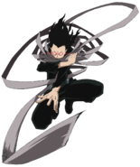
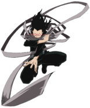
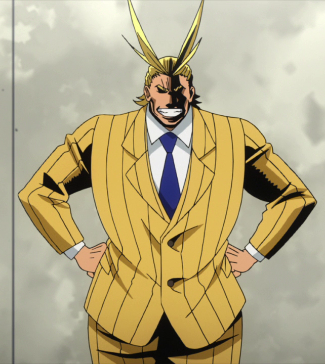
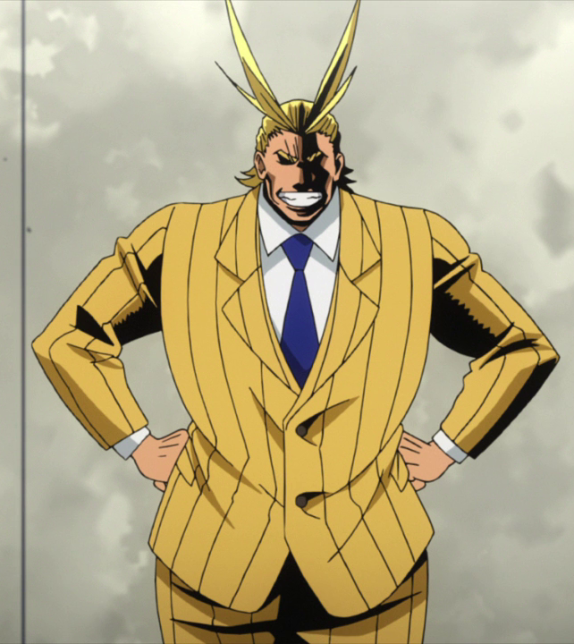

Manual do Player
Os players ganham 10 pontos de HP e ATK ao passarem de level.
Ao utilizar o traje de herói o player ganha 50 pontos de HP enquanto estiver usando o traje.
No level 1 todos os players começam com 150 de HP e 50 de ATK.
- Level 1: inicial
- Level 2: 500 xp
- Level 3: 1000 xp
- Level 4: 1500 xp
- Level 5: 2000 xp
- Level 6: 2500 xp
- Level 7: 3000 xp
- Level 8: 3500 xp
- Level 9: 4000 xp
- Level 10: 4500 xp
Após passar o level 10, o sistema é o mesmo para os próximos levels.

 

 
